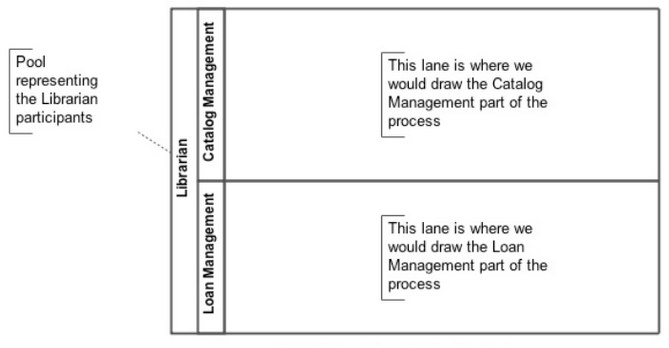
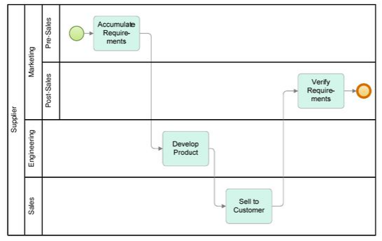
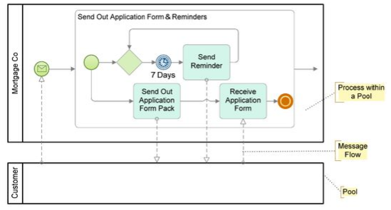

A swimlane is an element that allows distinguishing participants and responsibilities in a business process diagram. This makes it possible to organize the diagram in activities, in order to display different functional capacities or organizational roles. There are two types of swimlanes: pools and lanes. Pools – They represent containers of a process, where each one of them is the process in a participant and is used when the diagram involves two or more business entities or separate participants. Activities within containers are considered as independent processes. Therefore, in the message flow they are defined as the mechanism for communication between two participants. Lanes – They make it possible to associate activities with a specific function or role in a company. Lanes represent various process activities, for a participant in particular.  Lanes are divisions within pools, and they can be vertical or horizontal. The term "pool" was chosen by analogy to swimming, because a swimming pool has parallel swimlanes. In BMPN lanes can also be nested within each other (not yet supported in GeneXus). 
Collaboration Diagram – Communication between two or more participants of a process can be modeled using pools and explicit messages. In this case, the diagram can be considered as a "collaboration diagram". 
Go to the main article - Return to the previous section - Go to the next section
|